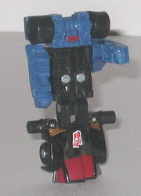

Sunstorm
vs. Checkpoint
Sunstorm
vs. Checkpoint
Size
: Mini-Con (2-pack)
Overall Rating
: 6.3
 Sunstorm
Sunstorm
Allegiance
: Decepticon, Minicon
Difficulty of Transformation
: Very
Easy
Color Scheme
: Light milky gray,
dark transparent purple, dull metallic yellow, and some silver, metallic
red, and dull bluish purple
Individual Rating
: 6.0
(NOTE: Because this toy is a repaint, this
is not a full-blown review. This mainly covers any changes made to the
toy and the color scheme, and merely compares it to Energon Wreckage. For
a review on the mold itself, read the review of Energon Wreckage
here
.)
Like his other teammates,
Sunstorm is a homage to the G1 jet of the same name. And in vehicle mode,
at least, Sunstorm's color scheme lives up fairly well to his name, what
with the dull yellow detailing covering most of the mode. It works surpisingly
well with the dark purple that surrounds it, and the light gray also goes
well with the purple in robot mode. However, I do have to complain about
the light gray with respect to the previous paint jobs this mode has gotten--
the light gray, and the red paint apps on it, are pretty much identical
to
Armada Runway's
. Given that this is the
fourth use of this general mold and the second use of this specific variation,
a bit more should have been done to differentiate the robot mode from any
of the previous incarnations. The solid bluish purple used for the thrusters
also doesn't quite fit with the transparent purple used for the rest of
the vehicle mode, which is a little distracting. Still, overall, Sunstorm
has a very nice color scheme.
No mold changes have
been made to Sunstorm, though a Decepticon emblem has been added to his
left rear tail wing.
Sunstorm Bio
:
One of the rebel generals most trusted
by Thrust, some suspect that Sunstorm is the true intelligence behind the
Mini-Con rebellion against the Council of Sages, and that this sudden uprising
may have some deeper purpose to it besides simple chaos. Indeed. Sunstorm
has secretly established contact with a small group of Decepticons in hiding
on the surface of Cybertron. His intention is to cause enough chaos among
the Mini-Con colonies to allow them to be easily conquered by the Decepticons,
after which they will joint Galvatron on the quest for domination of the
Universe!
Strength: 9.0
Intelligence: 8.0
Speed: 10.0
Endurance: 9.0
Rank: 9.0
Courage: 8.0
Fireblast: 6.0
Skill: 9.5
Combined
Sword Form (Combination of Sunstorm, Ramjet, and Thrust)
Difficulty of Transformation
: Very
Easy
Color Scheme
: Light milky gray,
charcoal black, transparent dark purple, fuchsia, dull metallic yellow,
shiny sparkly violet-red, and some silver, red, dull bluish purple, metallic
red, shiny off-white, and metallic moderately light blue
Individual Rating
: 4.2
The combined sword form
of Sunstorm,
Thrust
, and
Ramjet
--
an unnamed form, but I like to call it the Sun Saber-- can be held by larger
Cybertron Transformers, just like the Energon Saber these toys were repainted
from. Overall, the color scheme seems to mesh together very well, and looks
decidedly more "Decepticon-y" than the Energon Saber, with the purple,
fuchsia, and gray going together especially well. At first, the yellow
on Sunstorm may look like it throws off the color scheme, but that's until
I remembered that Sunstorm forms the "energy blade" of the sword, and yellow
is a perfect color to make the sword look more like an energy weapon. It
still suffers from the same problems as the original Energon Saber, but
I think the color scheme looks a bit better and more eeevil, as it should.
 Checkpoint
Checkpoint

Allegiance
: Autobot, Minicon
Difficulty of Transformation
: Very
Easy
Color Scheme
: Transparent black,
dull pale blue, black, red, and some white and metallic gold
Individual Rating
: 6.6
(NOTE: Because this toy is a repaint, this
is not a full-blown review. This mainly covers any changes made to the
toy and the color scheme, and merely compares it to the original Armada
Prowl. For a review on the mold itself, read the review of the original
Armada Prowl
here
.)
Checkpoint has a "night
police car"-style color scheme. He has the traditional blues and blacks
of such a vehicle, but the black takes up the bulk of the color scheme,
and it contrasts rather nicely with the other colors as well, so the whole
package looks pretty good color-wise. The red sirens look good, but the
red windows, like on Checkpoint's other teammates, look rather tacky, even
if they do fit in well with the black. The gold headlights do look very
good, however-- the particular shade used is very attractive. The "SWAT
A2" on the left side of the vehicle looks a bit crammed in there, but it
does give Checkpoint more of a "rescue vehicle" feel than he otherwise
would have. Some of his paint apps really needed to be transferred to his
robot mode, however-- his robot mode is practically barren of any paint
apps.
No mold changes have
been made to Checkpoint, but an Autobot symbol paint app has been added
to his front hood.
Checkpoint Bio
:
Checkpoint worked as an information
specialist and spy for Anti-Blaze even before Thrust began his rebellion.
His speed and talent for disguise, as well as a cluster of holographic
projectors housed on either side of his head make him ideal for infiltrating
enemy formations. But his real talent is in his ability to get a read on
a subject with minimal contact; Checkpoint can make incredibly accurate
guesses about an individual's personality and motives after only a few
moments of conversation. This talent makes him a dangerous enemy, and a
valuable resource to Anti-Blaze and the Council of Sages.
Strength: 5.0
Intelligence: 8.5
Speed: 7.0
Endurance: 10.0
Rank: 6.0
Courage: 10.0
Fireblast: 7.0
Skill: 9.0
Although both Sunstorm
and Checkpoint have the best paint jobs of any of their molds' previous
versions in my opinion, they're still my least recommended of the Wave
3 Minicon Battle Packs, primarily because neither of the molds are all
that good, in my opinion. Still, if you don't have any of these molds and
like small Transformers, or if you just have a hankering to complete the
combined sword form, this small $5 pack is worth picking up.
Reviews by Beastbot
Back to Transformers:
Cybertron Index